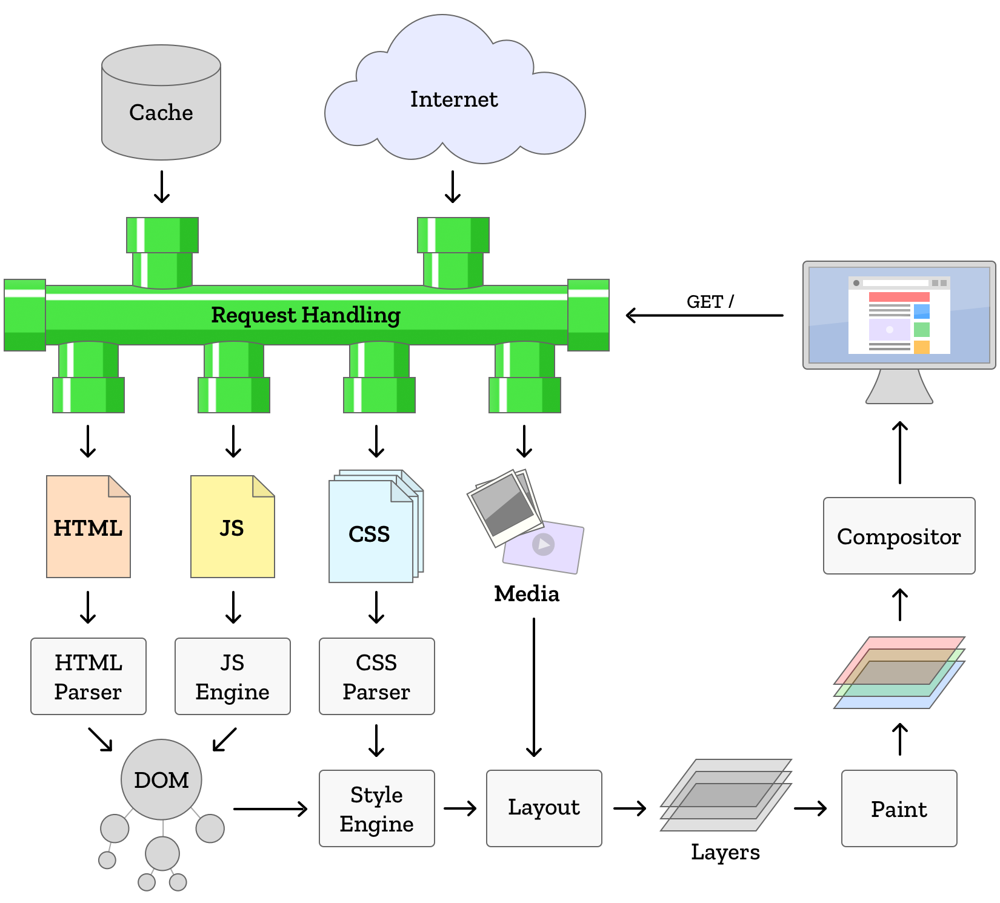

Frontend
"Any fool can write code that a computer can understand. Good programmers write code that humans can understand."
– Martin Fowler
Generalidades y conceptos
- ¿Qué es un navegador web?
- ¿Qué es una URL?
- ¿Qué es un dominio?
- ¿Qué es un hosting?
- ¿Qué es FTP?
¿Qué es un navegador web?
Un navegador o navegador web es el programa o aplicación que te permite acceder a los sitios web que visitas a diario como Google, facebook, youtube, etc, ya que éste interpreta su estructura y te los muestra como el diseñador lo ha planeado. Entre los ejemplos más populares de navegadores web tenemos a Google Chrome, Apple Safari, Mozilla Firefox, Opera e Internet Explorer.
En la actualidad existen gran variedad de navegadores, a diferencia de hace algunos años donde eran muy pocas las opciones para navegar en la web, Microsoft llego a tener un monopolio con su navegador Internet explorer.

Browser diversity
Los navegadores tienen un motor (engine), el cual es un programa que se encarga de interpretar contenido representado en html, asignarle un look & feel gráfico usando css y agregando interacción por medio de js
No todos los motores son iguales, por tanto un sitio web, se puede ver de manera diferente en determinados navegadores, desde hace tiempo y gracias a navegadores como Chrome y Firefox, se a procurado un estandar en la interpretación o render de las reglas gráficas y visualización de contenido con la creación de html5

Browsers rendering engines
Procurando mayor accesibilidad, los grandes portales y aplicaciones han promovido que los usuarios se muden a navegadores modernos, ya que si se ingresa a aplicaciones como youtube, facebook... desde un navegador obsoleto.
El sitio por lo general no funciona y además aparece un mensaje invitando al usuario a mudarse a un navegador que soporte las nuevas actualizaciones del estandar html5.
Navega Feliz :)¿Cómo es un servidor? (data center)
¿Qué es una URL?
La URL es la dirección específica que se asigna a cada uno de los recursos disponibles en la red con la finalidad de que estos puedan ser localizados o identificados.
Hay un URL para cada uno de los recursos (páginas, archivos, carpetas) que hay en la World Wide Web.
El URL sirve para que podamos encontrar aquello que estamos buscando en la red: una página, un sitio, un archivo, un documento, etc.
fuente:significados.com
URL o ruta absoluta: Incluyen todas las partes de la URL (protocolo, servidor y ruta) por lo que no se necesita más información para obtener el recurso enlazado.
URL o ruta relativa: Prescinden de algunas partes de las URL para hacerlas más breves.
fuente:concepto de y uniwebsidadDominio y hosting
¿Qué es un dominio?
Los dominios son los «nombres» de las páginas en Internet así de simple. Cuando quieres entrar a una página, normalmente escribes el nombre.
por ejemplo: www.xacarana.com
El nombre de dominio está compuesto por dos partes:
El nombre: El nombre que llevará tu página
TLD: La terminación. Que puede ser .com, .org, .net, .tv y muchas otras opciones. Ésta terminación ayuda a indicar el giro de tu empresa y ubicación: .com-> comercial; .com.mx -> comercial en México; .org-> asociación civil u organización sin fines de lucro; .tv -> canal de televisión
fuente: webhosting.com.bo¿Qué es un hosting?
El alojamiento web (en inglés web hosting) es el servicio que provee a los usuarios de Internet un sistema para poder almacenar información, imágenes, vídeo, o cualquier contenido accesible vía web. Es una analogía de «hospedaje o alojamiento en hoteles o habitaciones» donde uno ocupa un lugar específico
¿Qué es FTP?
Un programa SFTP te permite subir archivos para tu página web a tu espacio web. También puedes crear una copia de seguridad del sitio web con SFTP. Para ello, copia los datos del espacio web localmente en tu ordenador.
Con un programa SFTP también puedes borrar ficheros y/o carpetas enteras. Si borras contenidos, estos ya no aparecerán para los visitantes de tu página web.
¿Qué es FTP?

HTML
Es un código que utiliza etiquetas para representar la estructura de un documento, una etiqueta es un contenedor con un nombre semántico que representa su contenido. Es una herramienta muy antigüa, pero a pasado por diferentes versiones para mantenerse vigente, según las necesidades de los usuarios y el avance de la tecnología.
Actualmente usamos el estandar html5, el cual esta relacionado directamente con html5, pero se debe entender como la unión de varias tecnologías, como javascript, css3 y la inclusión de nuevas etiquetas html.
HTML
El código html, definirá por tanto los cimientos del proyecto, donde se estructura el contenido usando principalmente texto e imágenes. Esta etapa de la creación de un programa se considera la obra negra, porque todo el contenido aparece con su apariencia gráfica por defecto y carece de detalles como color, tamaño, posicionamiento, entre otros. El estandar XHTML fue muy importante, porque empieza a crear una visión por capas, donde se debe mantener el html como estructura "pura" que refleje solo el contenido del proyecto, sin tener dependencias.
HTML
El código html, es por tanto el soporte para cualquier aplicación, funciona como una capa independiente, a la cual se le puede extender su funcionalidad por medio de otros elementos como las hojas de estilo y javascript.
HTML
Para crear un código html escalable y bien construído se recomienda prestarle atención a los siguientes pasos:
No se deben escribir atributos en las etiquetas que modifiquen su apariencia gráfica. (Excepción width, height)
Cada etiqueta debe abrirse y cerrarse.
<img src="" />
HTML
Se deben usar las etiquetas correctas para representar el contenido, por ejemplo un párrafo debe usar la etiqueta p y no un div, funcionan parecido, pero semánticamente p es más representativo.
Las tablas solo se usan para mostrar datos relacionados, no se debe usar para maquetar una interfaz.
Usar el doctype estandar definido por htlml
<!doctype html>
HTML
Usar el conjunto de caractéres correcto
Algunas etiquetas importantes: p, div, a, img, iframe, span, entre otras. Para una completa referencia se recomienda visitar el sitio w3schools
CSS
Son las reglas gráficas que pueden ser aplicadas a los diferentes contenidos, por medio de los estilos se define propiedades como el color, el tamaño, la posición y un sin número de propiedades que manipulan la presentación de un elemento en el documento html.
Se considera por tanto una capa dependiente de la existencia del html, pero debe crearse completamente desacoplada del código, para poder cambiar el look de la aplicación sin alterar su contenido o funcionamiento.
CSS
El estandar html5, extendio la funcionalidad para manipulación de la interfaz gráfica y se incluyeron nuevas reglas denominadas CSS3.
CSS - USOS
Existen varias formas de crear y usar hojas de estilos o reglas de estilos en un documento html, a continuación se analizarán sus pros y contras.
CSS - USOS
Es responsabilidad de los implicados en la elaboración del código html y las hojas de estilo, mantener aislada una cosa de la otra, es decir no mezclar la capa de html con la capa de css. Por tanto se debe procurar siempre tener un archivo html y un archivo css (main.css). Su forma de relacionarse debe ser solamente a través de un vínculo o referencia.
CSS - USOS
Pros
- Mantiene una independencia entre el código html y las hojas de estilos
- Permite cambiar el look de la estructura html, con solo cambiar el nombre del archivo de estilos
- Se puede desarrollar en paralelo el html y el look del documento
- Mantiene el proyecto ordenado
- Centraliza la escritura de reglas gráficas
CSS - USOS
Contras
- Si el archivo de estilos no carga, el código html tendrá problemas de render de la interfaz gráfica
- Si la hoja de estilos es un archivo pesado el render del documento tendrá una visualización lenta dependiendo de la condiciones de conexión a internet y navegador usado para visualizar el documento
- El abuso de vínculos a diferentes hojas de estilo, impacta el performance del documento, porque por cada vínculo se requiere crear una petición con el servidor
CSS - USOS
Existe otra forma de incluir estilos directamente en el encabezado ("head") del documento html, se debe procurar solo usar esta forma de escribir cuando se quiere probar propiedades de estilos mientras se construye el sitio. Una vez probada y validada la funcionalidad, se deben poner las reglas en la hoja de estilos a parte del html.
CSS - USOS
Pros
- Permite escribir y probar rápidamente reglas en el documento actual
- Permite tener un panorama del documento e interactuar mejor con él
- Se requiere un solo archivo para mantener la información del documento
CSS - USOS
Contras
- Los estilos dependen de la vista, si es necesario modificar una propiedad del documento se debe modificar la vista específica
- No permite cambiar fácilmente el look de un documento
- Crea desorden en el proyecto
- Incrementa el peso del documento html
CSS - USOS
Todas las etiquetas html, tienen un atributo que permite definir reglas de estilos directamente en la etiqueta. Esta es la forma que crea más acoplamiento entre la vista y la estructura del código html, se debe evitar su uso. En la práctica, solo se usa esta forma de poner estilos cuando se esta construyendo un boletín o newsletter que será enviado por correo electrónico. (El correo electrónico puede ser visualizado en diferentes herramientas limitadas gráficamente y sin interacción)
CSS - USOS
Pros
- Las reglas de estilo, viajan con el html
- Sobreescribe reglas directamente en el elemento html
- Permite validar reglas gráficas en tiempo de contrucción
- No requiere del uso de selectores para aplicar reglas de estilo
CSS - USOS
Contras
- Se vuelve muy complicado modificar el look del documento, ya que se debe cambiar etiqueta por etiqueta el estilo
- Encontrar errores es una tarea complicada
- El código html se vuelve difícil de leer
CSS - Selectores
Para mantener la independencia de la aplicación de estilos de la estructura del documento, se debe relacionar el html con el css solamente a través de selectores.
Como su nombre lo indica, los selectores permiten seleccionar que parte de la estructura va a ser afectada por una regla gráfica. Es muy sencillo de aplicar este concepto, pero es responsabilidad de los contructores del documento de usar correctamente los selectores como enlace entre la estructura del documento y el look de presentación.
CSS - Selectores
Identificador: Es un selector para seleccionar un único elemento html. Se usa un nombre para identificar el elemento, se espera que el creador del documento cree un nombre único por elemento. Si se usa el mismo nombre para varios elementos, los resultados pueden ser inesperados.
CSS - Selectores
En el html
En el CSS
CSS - Selectores
Clase: Permite seleccionar un conjunto de elementos que compartan la misma clase. El selector de clase por tanto agrupa bajo una clase elementos del html los cuales pueden ser incluso diferentes.
CSS - Selectores
En el html

En el CSS
CSS - Selectores
Universal: Utiliza el nombre de la etiqueta para crear las reglas, que serán aplicadas a todos los elementos del tipo definido por el estilo en el documento. Se debe usar con precaución y casi siempre es el último recurso, ya que en documentos muy grandes su uso puede tener resultados inesperados.
CSS - Selectores
En el html
En el CSS
CSS - Funcionamiento
El motor del navegador, se encarga de leer de arriba hacia abajo el archivo de reglas gráficas y aplicarlas "inmediatamente", por tanto es posible redefinir una regla gráfica con solo usar el identificador y cambiar las reglas aplicadas.
CSS - Funcionamiento
Aplicación corriente de una regla a un elemento html
CSS - Funcionamiento
Sobreescritura de una regla, por orden de lectura
CSS - Funcionamiento
Sobreescritura redefiniendo la clase
CSS - Funcionamiento
Es posible darle prioridad a una regla, para evitar que sea sobreescrita o para evitar que se sobreescriba
*Los estilos de un selector se deben asignar en un solo sitio
CSS - Propiedades
display: Define como va a ser interpretada la visualización del elemento html por parte del navegador, existen diferentes tipos de display, vamos a revisar algunos de los más importantes.
CSS - Propiedades
El documento html, se puede ver como una página de un cuaderno, llena de reglones, que van desde el principio de la margen izquierda hasta el final de la margen derecha.
CSS - display
in-line: Indica que el elemento tiene las siguientes características:
- Horizontalmente ocupa el tamaño definido por su contenido
- Se pueden mostrar varios elementos en línea, siempre y cuando el ancho del contenido no supere el ancho total del documento
- El tamaño vertical del reglón donde se muestra el elemento, se determina por el alto mayor de alguno de los elemento en el mismo reglón
CSS - in-line
- Para saltar de línea o crear un nuevo reglón se debe usar la etiqueta break line, ya que un enter en el código html no es tenido en cuenta
- Si el ancho del documento cambia, los elementos en línea tienen en cuenta el nuevo ancho para redistribuirse en el reglón al cual pertenencen
- El elemento debe tener contenido para poder ser visualizado
- Simula el comportamiento que tiene la mínima expresión de información conocida como un carácter en un documento.
- Pueden haber múltiples caracteres en el mismo reglón
CSS - in-line
CSS - display
block: Indica que el elemento tiene las siguientes características:
- Horizontalmente siempre ocupa el ancho total del documento
- Solo se muestra un elemento por reglón
- El tamaño vertical depende del contenido del elemento
CSS - block
- Hay un salto de línea cada vez que se crea un elemento con este display
- Si el ancho del documento cambia, el contenido se adapta horizontalmente
- El elemento no necesita contenido para poder ser visualizado
- Simula el comportamiento de un parrafo en un documento.
CSS - block
CSS - display
none: Sin visualización, esto permite que el elemento no se muestre, pero esta presente dentro de la estructura del archivo html.
HTML y CSS - generalidades
- Comentarios (Desactivar un conjunto de reglas)
- Prefijos
- Modelo de color (RGB)
- Sintaxis correcta
- Combinar clases
HTML y CSS - Comentarios
El código html y las reglas de estilos, son instrucciones que entiende el motor del navegador y le permite interpretar gráficamente la interfaz de un documento y "pintarla" en el navegador.
HTML y CSS - Comentarios
Cuando se crea un documento, es importante poder realizar ciertas "anotaciones" sobre el archivo html y sobre la hoja de estilos.
- Para reconocer secciones dentro del archivo
- Poner información de autoría
- Información de uso de clases o etiquetas
- Deshabilitar parte de la estructura
- Para evitar que se aplique alguna propiedad gráfica
HTML - Comentario
Para comentar líneas o bloques de código se usa la siguiente sintaxis
CSS - Comentario
Para comentar líneas o bloques de reglas de estilo se usa la siguiente sintaxis

CSS - Prefijos
El nuevo estandar CSS3, procura que todas las reglas de estilos se apliquen correctamente en los diferentes navegadores propietarios, por tal motivo desarrollo una sintaxis de prefijos, que agregandose a ciertas reglas, se puede espeficar los valores que va a tener la regla en un navegador especifico, como se muestra a continuación.
Modelo de color - RGB
El modelo de color que se debe usar en insumos para internet o para pantallas, es el modelo de color RGB, el cual representa los colores por medio de longitudes de onda primarias, como el rojo, el verde y el azul. Apartir de la adición de estos colores podemos representar 16,7 millones
Modelo de color - RGB

Intente construir colores complementarios utilizando la anterior tabla
Se recomienda usar adobe kuler para encontrar paletas de colores populares
Sintaxis correcta
El código html y las hojas de estilos son interpretadas por el motor del navegador, si existe un error el navegador tratara de avisarnos, pero por lo general el control de errores depende del creador del documento, se recomienda seguir algunas buenas prácticas para evitar errores.
- Evitar el uso de caráctes especiales
- Usar entities para representar símbolos como ñ,tíldes..
- No usar espacios para nombrar identificadores o clases
- Escribir todo el código en minúscula
Sintaxis correcta
- Usar palabras nemotécnicas para nombrar identificadores o clases
- Usar un editor de texto que permita validaciones de código
- Prestar atención a los punto y coma para finalizar reglas de estilo
- Identar apropiadamente el código y las reglas de estilo
- Abrir y cerrar llaves
CSS - Combinar clases
Es muy frecuente encontrar en aplicaciones modernas, la combinación de varias clases para lograr ciertas funcionalidades por parte de la interfaz gráfica, permitiendo una modularidad en la implementación.